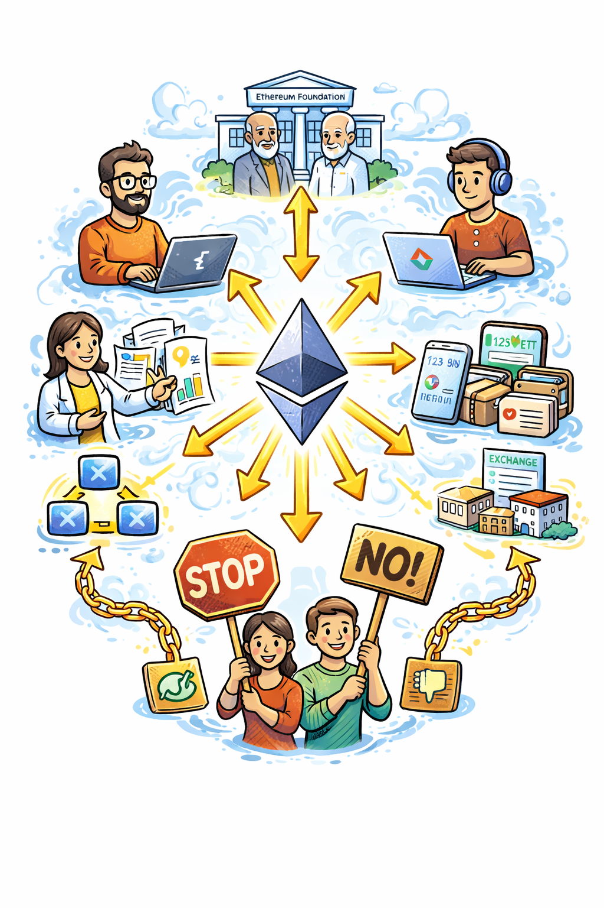
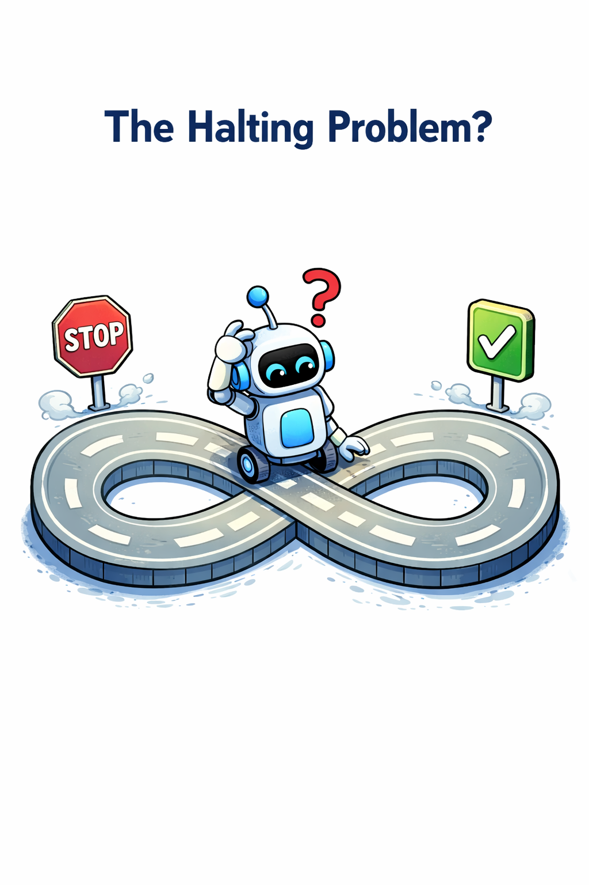
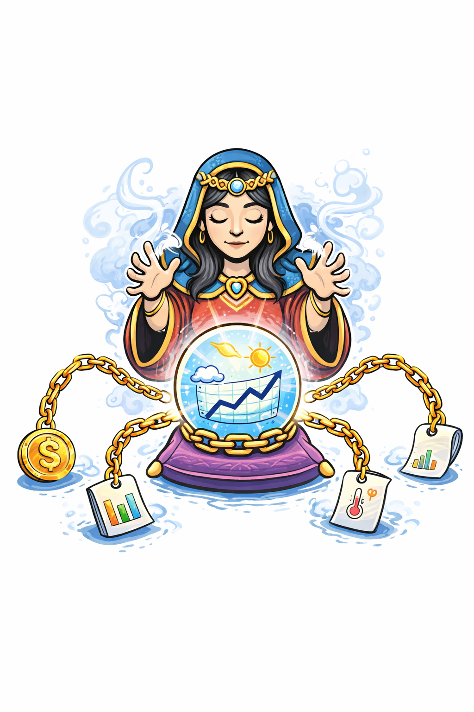
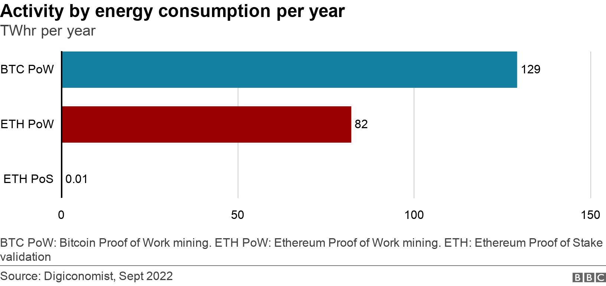

Section VII: Ethereum Framework · Lesson 01-EF
Ethereum — A Distributed Computer
Beyond Cryptocurrency: Buterin’s Vision
- By 2013, Bitcoin had shown that a decentralized network could maintain digital money without a central bank, but its scripting model was intentionally narrow and not designed for general applications.
- Vitalik Buterin envisioned something broader: a blockchain that could run arbitrary application logic, so developers would not need to build a new chain for every new use case.
Photo: Romanpoet, Vitalik Buterin Profile Photo, Wikimedia Commons (CC BY-SA 4.0).
- In the whitepaper, Ethereum aimed to provide a general-purpose platform for smart contracts and decentralized applications that could execute the same rules on every node.
- Smart contracts are on-chain programs that can hold value, update state, and enforce rules automatically.
- Deterministic execution across many nodes provides credible neutrality for all of those applications.
Ethereum’s History
2013: Buterin publishes the Ethereum Whitepaper.
2014: Crowdsale raises ~31,000 BTC; Foundation established.
2015: Mainnet launches with smart contracts and mining.
2016: DAO hack and hard fork split ETH and ETC.
2017–2021: Upgrades improve gas, tooling, and the ecosystem.
2022: The Merge. Ethereum shifts from PoW to PoS.
Governance & Ethereum Improvement Proposals (EIPs)
Bitcoin governance is relatively conservative and informal: changes emerge through rough social consensus among developers, node operators, miners, and users, with a strong bias against frequent protocol change. Ethereum is also governed socially, but it uses a more explicit proposal culture and public upgrade process to coordinate faster protocol and standards evolution.
- Ethereum changes through Ethereum Improvement Proposals (EIPs), which are the public specifications for protocol and standards updates.
- Core EIPs change protocol rules; ERCs define shared application standards such as token and wallet interfaces.
ERCstands for Ethereum Request for Comment.- Adoption still depends on social consensus: there is no binding on-chain vote that forces Ethereum L1 upgrades.
Examples: EIP-1559 changed the fee market; ERC-20 standardized fungible tokens.
EIP Workflow
- A proposal typically moves from idea to draft, then through review and, if accepted, toward a stable final form.
- Editors check format and clarity, while developers and researchers debate feasibility, risks, and tradeoffs in public.
- For protocol changes, client teams implement and test the change on devnets and testnets before mainnet activation.
- The important point is that Ethereum upgrades are specified, implemented, tested, and adopted in stages rather than changed by decree.
Stakeholders & Decision Making
- Client teams implement software and therefore shape what is realistically deployable.
- Researchers and contributors propose designs and analyze security, incentives, and tradeoffs.
- The Ethereum Foundation helps coordinate, but it does not unilaterally command upgrades.
- Validators, node operators, exchanges, wallets, and application teams all matter because they decide what software to run and support.
- In the end, Ethereum governance is opt-in: if enough people disagree, they can refuse an upgrade or follow a different chain.

The Ethereum Virtual Machine (EVM)
A stack-based virtual machine executed by every node for each transaction or contract call. Contracts are compiled from languages (such as Solidity) into bytecode that the EVM runs.
- Deterministic: the same input and prior state must produce the same result.
- Isolation: contracts run in a sandboxed environment with tightly limited external access.
- Gas metering: opcodes charge gas to bound computation and prevent infinite loops.
- State updates persist through Ethereum’s account and contract-storage model.
- Native asset: Ether (
ETH);gweiis a common subunit, where1 ETH = 1 billion gwei.
The Halting Problem
Can an algorithm decide whether any arbitrary program will eventually halt or run forever?
No. In the general case, the problem is undecidable.
“there can be no general process” that decides this for every possible program.
–Alan Turing (1936)
Ethereum wants to run expressive programs, but every node must be able to stop and agree on the result. How can we solve this?
Solution: Gas metering charges for computation and halt execution when prepaid gas runs out.

Gas: Metering Computation and Storage
- Every EVM operation has a gas cost, and operations that write permanent state are priced especially high.
- Users choose how much gas a transaction may consume and how much they are willing to pay for each unit of gas.
- Total fee = gas used × effective gas price, which combines the base fee and any tip.
- If execution runs out of gas, Ethereum reverts the state changes but still charges for the computation nodes already performed.
- Each block has a gas limit, which caps how much total computation and storage-changing activity can fit into that block.
- Under EIP-1559, the base fee is burned and the tip goes to the block proposer.
- If part of every transaction fee is permanently destroyed, what does that imply about ETH supply over time?
Determinism & Execution Constraints
- Every node must reach the same result when executing the same transactions.
- Consensus depends on identical state transitions across all nodes.
- Consensus depends on identical state transitions across all nodes.
- Contracts execute in a sandboxed EVM:
- No access to the file system, network, clock, or OS randomness.
- Execution must be purely deterministic given on-chain state and input.
- No access to the file system, network, clock, or OS randomness.
- Implication:
- Smart contracts cannot directly query off-chain information or trigger external actions.
- Randomness, time, and I/O require careful design (e.g., block hash entropy, commit–reveal schemes).
- Smart contracts cannot directly query off-chain information or trigger external actions.
If even one node computes a different result, consensus breaks, so the EVM forbids nondeterministic behavior.
Oracles: Bridging Blockchains and Reality

- Problem: Smart contracts cannot directly observe off-chain facts such as prices, weather, or election outcomes.
- Oracle: an external system that brings outside data on-chain so contracts can use it in their logic.
- Common models: a single trusted data source, or a decentralized oracle network that aggregates multiple sources.
- Trade-off: oracles solve the information gap, but they add new trust assumptions around data quality, honesty, and liveness.
Accounts & Global State (EOA vs Contract)
- Externally Owned Accounts (EOAs): controlled by private keys; initiate transactions and pay gas. (wallet)
- Contract accounts: hold code and storage, and run only when another transaction or contract call activates them. (program)
- Ethereum’s global state keeps track of each account’s balance, nonce, code, and storage.
- Contract addresses are deterministic: under
CREATE, they come from the creator and nonce; underCREATE2, they come from the creator, a salt, and the bytecode hash.
- That predictability lets developers plan deployments, coordinate contracts, and support upgrade patterns.
Transaction Models: UTXO vs Accounts
Bitcoin UTXO Model
Ethereum Account Model
The Merge (Sept 15, 2022)
- Ethereum originally launched with Proof of Work; The Merge changed block production to Proof of Stake.
- In simple terms, Ethereum kept the same application layer while swapping out the mechanism that decides who gets to add the next block.
- Mining ended, and block production moved from miners using hardware and electricity to validators participating under the new consensus model.
- Users, balances, and smart contracts carried forward without resetting the chain, so the change was structural rather than a brand-new network launch.
PoW vs PoS: Security Model (Review)
| Feature | Proof of Work (PoW) | Proof of Stake (PoS) |
|---|---|---|
| Security resource | Energy + hardware | Staked ETH (capital) |
| Who proposes blocks | Miners, proportional to hashpower | Validators, pseudorandomly selected from stakers |
| Attack cost | Continuous energy expenditure | Large bonded stake at risk of being slashed |
| Punishment for misbehavior | Wasted electricity, orphaned blocks | Slashing: loss of staked ETH |
| Consensus rule | Longest-chain by cumulative work | Finalized checkpoints by ≥2/3 stake attestations |
| Finality | Probabilistic (more confirmations → safer) | Economic and explicit (irreversible after finalization) |
Impact of The Merge

Chart: BBC News, Joe Tidy, Ethereum Merge: How One Big Cryptocurrency Is Going Green (Sept. 14, 2022).
- ~99.9% reduction in energy use, because mining hardware no longer secures the network.
- ETH issuance fell relative to the PoW era, while EIP-1559 base-fee burn continued.
- Supply dynamics shifted away from heavy issuance and toward network activity.
- Some mining hardware moved to other PoW chains after Ethereum stopped mining, changing the economics and security mix of those networks.
- Users and applications continued through the transition without restarting the chain, which showed that Ethereum could change its consensus system without wiping balances or contracts.
- The Merge set up Ethereum’s next phase by letting the roadmap focus on rollups and data availability instead of maintaining a mining-based base layer.
Transaction Lifecycle (PoS Era)
- A wallet creates and signs the transaction, and peers relay it through the mempool.
- A validator can include it in a block, then every node re-executes it in the EVM.
- Gas meters execution: successful calls update state and emit logs; failed calls revert state but still consume gas.
- Inclusion is not finality: a transaction can appear in a block quickly, but PoS finality comes later through validator attestations.
- The core execution logic stayed the same after the Merge; what changed was the consensus and finality mechanism.
From EVM to Programs — Smart Contracts
Ethereum can deploy programs at their own contract addresses with persistent state.
These are smart contracts: code plus storage that follow on-chain rules.
- Once deployed, the code determines how calls are handled.
Contracts run only when called; there are no background tasks.
Contracts can call other contracts, enabling composability and atomic workflows.
// SPDX-License-Identifier: MIT // License identifier
pragma solidity ^0.8.20; // Solidity version
contract SimpleCounter { // Define contract
uint256 private count; // Stored counter value
address public owner; // Address of deployer
constructor(uint256 startingValue) { // Runs once on deployment
owner = msg.sender; // Set deployer as owner
count = startingValue; // Initialize counter
}
function increment() public { // Anyone can increase count
count += 1; // Add 1 to counter
}
function reset() public { // Reset function
require(msg.sender == owner, “Only owner can reset”); // Access control
count = 0; // Reset counter to zero
}
function getCount() public view returns (uint256) { // Read-only function
return count; // Return current value
}
}
DApp Architecture
- A DApp (Decentralized Application, also dApp, Dapp, or dapp) = user interface + wallet + one or more on-chain smart contracts.
- The UI (web or mobile) connects to a wallet, which holds keys, signs, and sends transactions.
- Contracts execute deterministically on Ethereum, replacing traditional backends and intermediaries.
- Purpose: remove centralized control, enable trust-minimized coordination and asset ownership.
- Security and usability hinge on standards, permission design, and cautious composability.
How Most Users Touch Ethereum
- Common actions: buy ETH for gas, hold or send stablecoins, mint, swap, bridge, and approve token spending.
- Wallets are the user’s signing layer; examples include MetaMask, Rabby, Rainbow, Trust Wallet, Coinbase Wallet, and Ledger.
- Exchanges/on-ramps are entry and exit services; examples include Coinbase, Kraken, Robinhood Crypto, and Binance.US.
- RPC providers, indexers, and explorers make apps usable, but they are not the chain itself.
State Growth & Storage Pressure
- Core problem: every new piece of on-chain state makes Ethereum a little heavier for future nodes to store and verify.
- State persists by default: contract storage stays on-chain unless someone explicitly clears it; there is no automatic expiry.
- This creates pressure over time: larger state means higher disk, memory, and sync costs for nodes, which can make full participation harder.
- Why it matters: if running a node becomes too expensive, validation concentrates in fewer hands and decentralization weakens.
- Research directions: Ethereum researchers are exploring pruning old history, lighter state structures, and ideas like state rent or re-genesis to manage long-term growth.
The Scaling Problem
Why not bigger blocks? If a block can carry more transactions, it is natural to think the network should process more activity per block and therefore scale more easily.
- Bigger blocks raise hardware and bandwidth requirements, pushing validation toward data centers.
- Ethereum prioritizes broad verifiability at L1, because that supports both security and decentralization.
- The strategy is to keep L1 minimal for ordering and data availability, while scaling most execution elsewhere.
- This is the scalability trilemma: security, decentralization, and scalability pull against one another.
Introducing L2
- Layer 1 (L1) is the base blockchain, such as Ethereum itself, which provides consensus, ordering, and data availability, which you are familiar with.
- Layer 2 (L2) is a separate execution environment built on top of a L1 that processes transactions off the main chain and then posts data or proofs back to that L1.
- Several L2s can exist on top of the same L1 because different teams can build separate systems with different performance, cost, and trust tradeoffs while still inheriting settlement from the underlying chain.
Modular Scaling
- L1 focuses on consensus, ordering, and data availability.
- L2s handle execution and post the data needed to verify their state transitions.
- Security comes from L1: if data is available on L1, anyone can reconstruct and verify L2 state.
- Increasing L1 data availability capacity scales the entire ecosystem without inflating L1 execution or state.
L2 Operator Models
- L2 operators order transactions and post results to L1.
- Sequencer: orders user transactions into batches for the L2.
- Prover: produces the proof or claim that Ethereum will later check.
- L1 does not “trust” them — it enforces verification rules deterministically.
- These are two models for how an entire L2 proves correctness back to Ethereum:
- Optimistic rollups: Ethereum accepts the result unless someone challenges it during a dispute window with a fraud proof.
- Zero Knowledge (ZK) rollups: Ethereum checks a cryptographic proof showing the state transition was correct.
- Optimistic rollups: Ethereum accepts the result unless someone challenges it during a dispute window with a fraud proof.
Security comes from data availability and L1 verification, not from trusting L2 operators.
Rollups — Optimistic vs ZK
| Feature / Tradeoff | Optimistic Rollups | ZK (Validity) Rollups |
|---|---|---|
| Verification Model | Assume correct, can be challenged | Prove correctness up front |
| Security Basis | Fraud proofs; at least one honest challenger | Cryptographic validity proofs |
| Finality & Withdrawals | Delayed (challenge window) | Near-instant after proof verification |
| Cost / Complexity | Simple, lower proving cost | Complex circuits, high proving cost |
| EVM Compatibility | Natively EVM-compatible | Emulation or zkEVM required |
| Throughput & Latency | High throughput, delayed finality | Moderate throughput, instant finality |
| Examples | Optimism, Arbitrum, Base | zkSync, StarkNet, Scroll, Polygon zkEVM |
Proto-Danksharding (EIP-4844) — Blob Data for L2s
- Introduces blobs: large, cheap, temporary data attachments to blocks.
- Blobs store raw rollup batch data needed for verification, but are not executed by the EVM.
- Nodes ensure blobs are available for a limited time (~weeks), then prune them.
- Decoupling execution from data availability reduces L2 costs and keeps L1 state small.
- Called “proto-danksharding” because it implements the blob system without full sharding yet—a stepping stone to the final design.
Sharding splits a workload across parallel pieces of the system so the network can handle more data or computation without forcing all nodes to process everything.
Summary
Ethereum extends the blockchain idea from digital money to a shared computer that can run general-purpose programs.
The EVM, deterministic execution, and gas metering are what make that shared computer verifiable across many nodes.
Smart contracts are on-chain programs with persistent state, which enables DApps, composability, and new trust assumptions around code and oracles.
Ethereum’s long-term scaling path keeps L1 broadly verifiable while moving more execution to L2s and improving data availability.